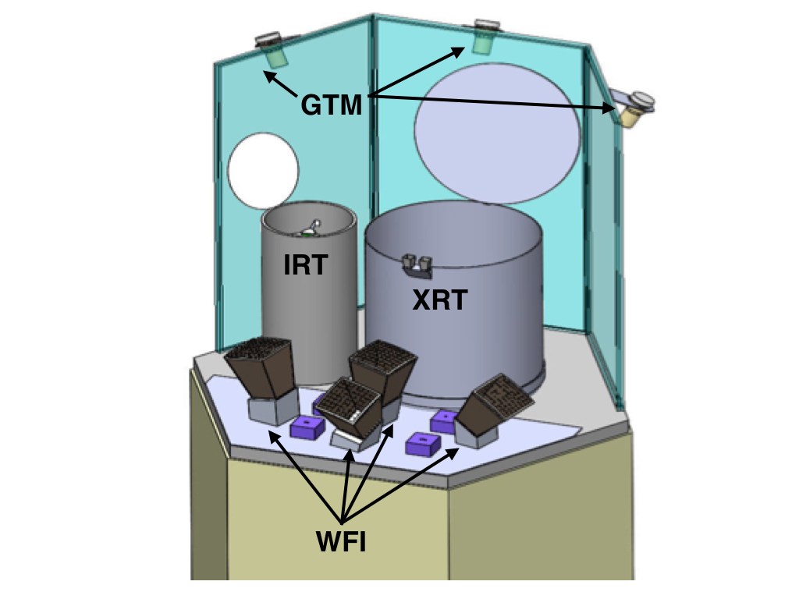

Instruments
TAP is comprised of 4 instruments that work together to survey the sky and follow-up transient and variable sources in the near infrared, X-ray, and gamma-ray bands. Upon the detection of new transients, TAP will autonomously slew to point the narrow field instruments at the new source to better localize it, measure it's fading light curve in NIR and X-ray, and determine the redshift.
- Wide Field Imager (WFI) - soft X-ray wide field of view Lobster microchannel optic surveys the sky
- X-ray Telescope (XRT) - sensitive crystal silicon, grazing incidence, soft X-ray telescope that follows up and localizes transients and conducts a deep survey
- InfraRed Telescope (IRT) - near-IR telescope provides localizations and rapid low-resolution spectroscopy of new transients
- Gamma-ray Transient Monitor (GTM) - NaI scintillators coupled to PMTs monitoring the sky for transient hard X-ray and gamma-ray sources
Instrument Properties
| Parameter | WFI | XRT | IRT | GTM |
|---|---|---|---|---|
| Quantity | 4-6 | 1 | 1 | 3-12 |
| FoV | N x 19°x19° (0.5 sr) | 1° diameter | 1°x1° | 2 π sr |
| Aperture Diameter | n/a | 130 cm; fl=500 cm | 70 cm | n/a |
| PSF/FWHM | 8 arcmin | 3 arcsec | 1 arcsec | n/a |
| Energy Range | 0.3 - 5 keV | 0.5-6 keV | 0.6 - 2.5 μm | 10 keV - 1 MeV |
| Sensitivity | 10-11 erg cm2 s-1 (2ks) | 2x10-15 erg cm2 s-1 (2ks) | 23 mag (300 sec) | 1 ph cm-2 s-1 |
| Mass | 140 kg | 256 kg | 86 kg | 29 kg |
| Power | 276 W | 370 W | 119 W | 25 W |
Last modified: Tue Apr 11 16:15:45 EDT 2017